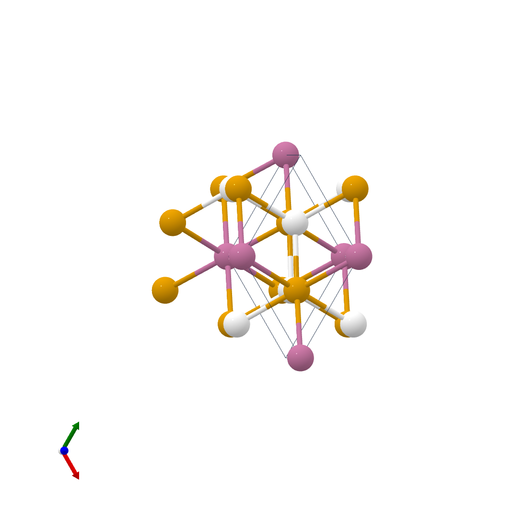

AM₂P₂
This family includes Zintl-phase phosphides with A-site and M-site chemical tunability, making it useful for studying structure–property trends, optical emission, and band gap behavior.
Overview
Optoelectronic materials with bandgap from 1.46 eV to 1.89 eV applicable to both single junction and tandem PV
Crystal Structure

Photoluminescence
Add PL peak positions, linewidth, temperature dependence, and notable recombination features here.

Band Gap
Comparison of experimentally measured and computed band gap values for representative compounds.
| Material | Experimental (eV) | Method | Computed (eV) | Method | Notes |
|---|---|---|---|---|---|
| BaCd₂P₂ | 1.46 | PL | 1.45 | HSE06 | Direct band gap |
| CaCd₂P₂ | 1.59 | PL | 1.62 | HSE06 | Direct Band gap |
| SrCd₂P₂ | 1.51 | PL | 1.51 | HSE06 | Direct Bandgap | CaZn₂P₂ | 1.89 | PL | 1.89 | HSE06 | Inirect Band gap |
| SrZn₂P₂ | 1.72 | PL | 1.71 | HSE06 | Indirect bandgap |
Related Papers
- Discovery of the Zintl-phosphide BaCd2P2 as a long carrier lifetime and stable solar absorber
- Low-Temperature Synthesis of Stable CaZn2P2 Zintl Phosphide Thin Films as Candidate Top Absorbers
- CaCd2P2: A Visible-Light Absorbing Zintl Phosphide Stable Under Photoelectrochemical Water Oxidation
- A Map of the Zintl AM2Pn2 Compounds: Influence of Chemistry on Stability and Electronic Structure
- BaCd2P2: a promising impurity-tolerant counterpart of GaAs for photovoltaics